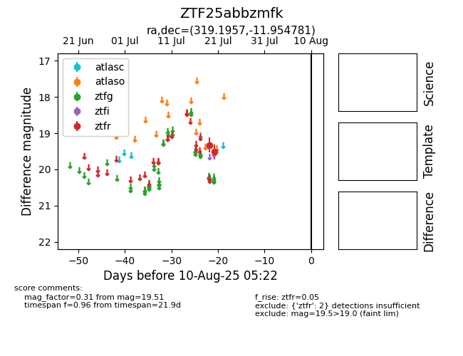

Target ZTF25abbzmfk at 2025-08-10 05:22, see:
FINK: fink-portal.org/ZTF25abbzmfk
Lasair: lasair-ztf.lsst.ac.uk/objects/ZTF25abbzmfk
ALeRCE: alerce.online/object/ZTF25abbzmfk
alt names
ZTF25abbzmfk (ztf,fink)
coordinates:
equatorial (ra, dec) = (319.1957,-11.95478)
galactic (l, b) = (38.7261,-37.61503)
photometry
last ztfr=19.51
2 ztfr detections
